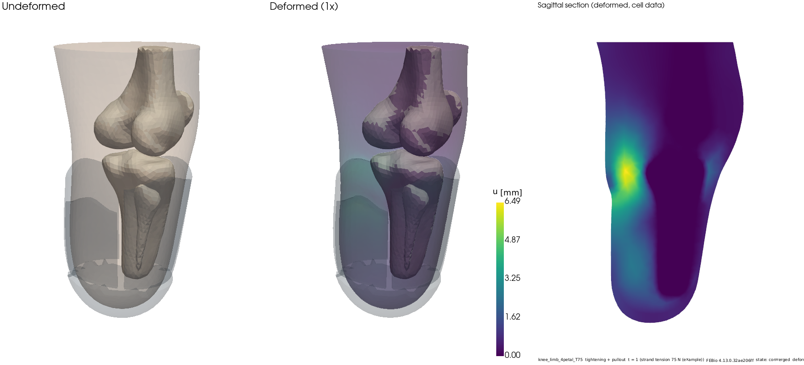
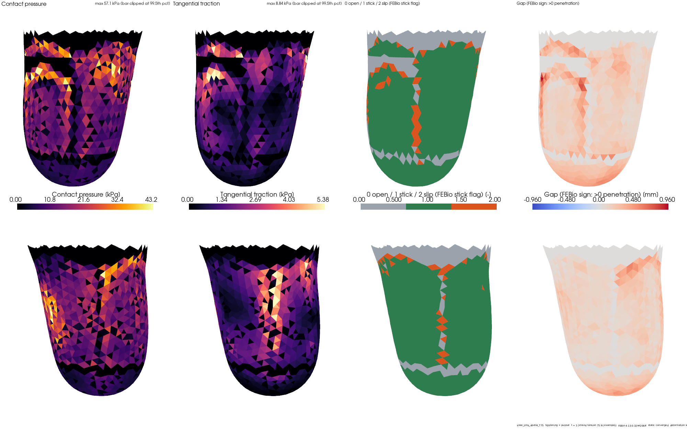
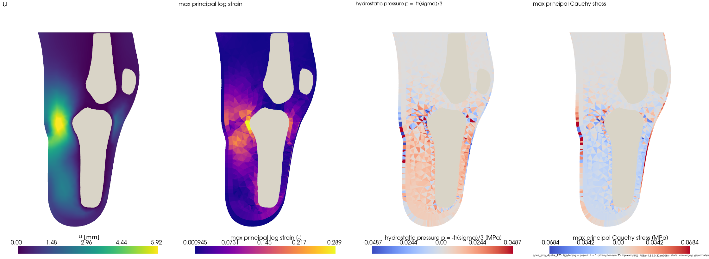

This is a full finite element model of a below-knee residual limb, with skin, fat, muscle and four bones, squeezed by an adjustable petal socket. The run below tightened the lace to the 75 N example tension and then pulled the socket 2 mm off the limb. solver converged (tightening + pull-out)
These are numbers from one model. They are not clinical limits or injury thresholds. Peak contact pressure depends on the mesh, and the penalty contact method underestimates it; see the limitations below.



| Step | Load | Max tissue displacement (mm) | Peak contact pressure (kPa) | Contact force (N) | Min J | Force imbalance |
|---|---|---|---|---|---|---|
| t = 0.25 | lace 18.8 N | 1.84 | 24 | 157 | 0.905 | 7.8e-06 |
| t = 0.50 | lace 37.5 N | 3.52 | 36 | 291 | 0.820 | 1.6e-10 |
| t = 0.75 | lace 56.2 N | 5.08 | 49 | 427 | 0.737 | 1.9e-06 |
| t = 1.00 | lace 75.0 N | 6.49 | 57 | 560 | 0.663 | 7.0e-07 |
| t = 1.10 | lace 75 N + pull-out 0.20 mm | 6.43 | 57 | 559 | 0.659 | 4.3e-11 |
| t = 1.20 | lace 75 N + pull-out 0.40 mm | 6.30 | 57 | 554 | 0.656 | 5.6e-10 |
| t = 1.30 | lace 75 N + pull-out 0.60 mm | 6.19 | 57 | 549 | 0.653 | 2.6e-05 |
| t = 1.40 | lace 75 N + pull-out 0.80 mm | 6.08 | 58 | 544 | 0.650 | 1.2e-06 |
| t = 1.50 | lace 75 N + pull-out 1.00 mm | 5.99 | 58 | 538 | 0.648 | 1.6e-06 |
| t = 1.60 | lace 75 N + pull-out 1.20 mm | 5.87 | 59 | 533 | 0.645 | 1.8e-09 |
| t = 1.70 | lace 75 N + pull-out 1.40 mm | 5.77 | 59 | 527 | 0.643 | 9.6e-07 |
| t = 1.80 | lace 75 N + pull-out 1.60 mm | 5.67 | 59 | 522 | 0.641 | 8.8e-10 |
| t = 1.90 | lace 75 N + pull-out 1.80 mm | 5.56 | 60 | 516 | 0.639 | 1.1e-05 |
| t = 2.00 | lace 75 N + pull-out 2.00 mm | 5.46 | 55 | 511 | 0.637 | 1.9e-09 |
J is the local volume ratio (1 means no change). Force imbalance is the residual of the global force balance divided by the largest force.
git clone https://github.com/Shim-1122/knee-fea.git cd knee-fea sudo bash scripts/build_febio.sh pip install -r requirements.lock.txt && pip install -e . --no-deps rlfea verify rlfea run configs/knee_limb_segmented.yaml --runs runs